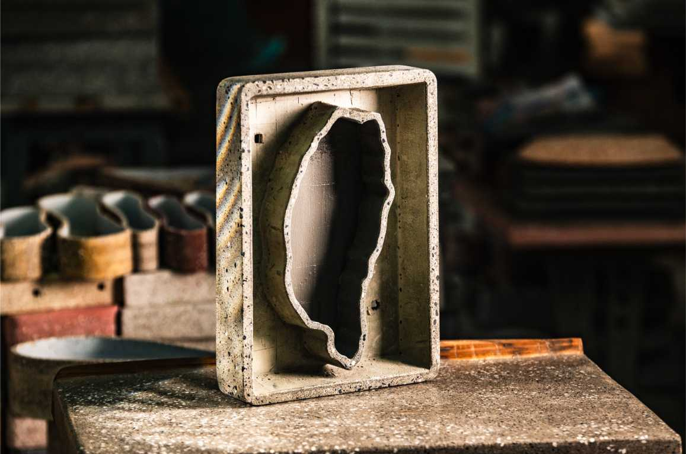
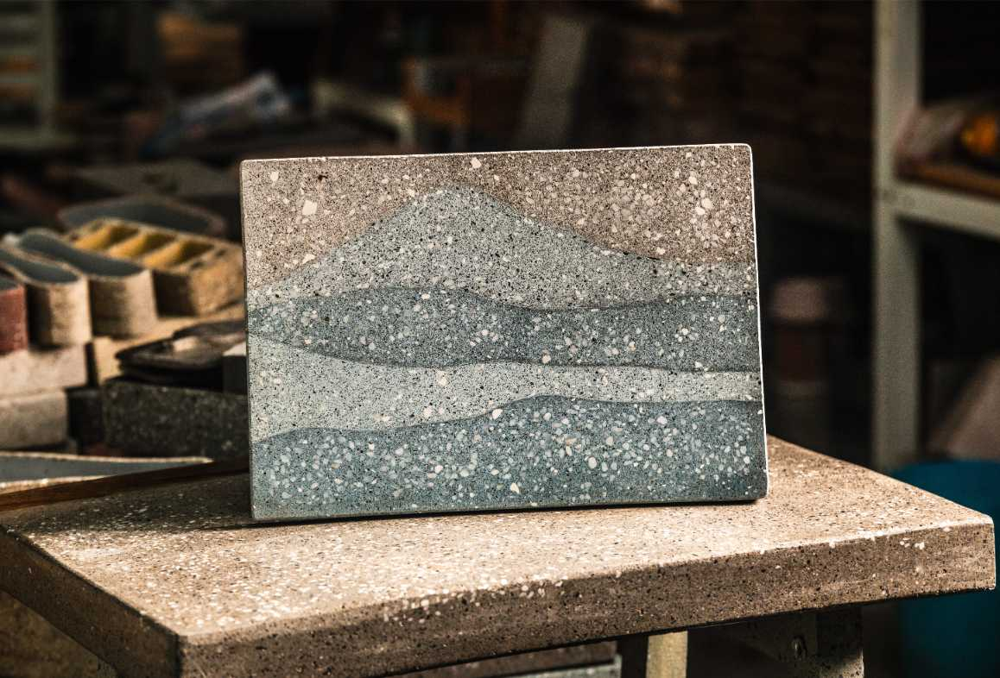
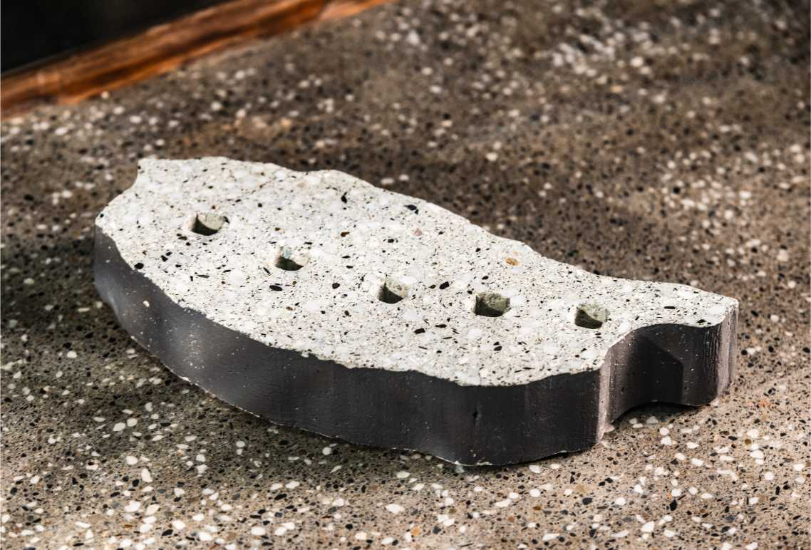

社區合創 · 企業 ESG · 材料供應 · 學術支持



「掃一張桌子」不只是做一件家具——它是一套完整的社區循環生產模式。從材料收集到成品完成，每一個環節都開放社區居民參與，讓廢料的升級轉化真正發生在在地。
往年 4 月提案、5 月審查、6 月開工。今年卡在水保署審查中，計畫預算尚未核定，社區暫時無法啟動大規模行動。
Rovi 老師決定不等審查。就近取材路邊廢料，六月親自做一張桌子放在廟旁。「少一張做的話，還是可以去推。」廢料的故事不因計畫卡關而停下來。
竹塘是第一個示範點。成功後以工法 SOP 授權方式，讓更多鄉鎮可以在地生產，形成全台衛星工廠網絡。
社區居民帶來廢棄建材、廢磚、廢玻璃。玩家掃描 QR 碼即可累積康加幣點數，完成首次參與。
依材料種類分類：再生骨料、廢玻璃、爐石粉各歸其位。由 Rovi 老師進行材質鑑別與配比評估。
社區居民可以參與討論作品造型、刻字內容或骨料配色。讓最終作品帶有社區共同的記憶。
PS 板割模、鋼筋定位、分次灌漿——由 Rovi 老師主導製作。居民可在開幕階段現場見證。
養護 28 天達設計強度，水磨開箱。作品作為社區公共座具永久留下，或成為社區銷售品項。
「掃一張桌子」計畫的核心夥伴。農村在地廢料採集、社區長輩共創工作坊、公共座具完成，是 Hub & Satellite 模式的第一個示範場域。
在地預拌混凝土廠合作，協助連結上游原料供應。成大永續材料中心蔡志達博士介紹聯繫，支持在地循環材料體系建立。
蔡志達博士協助聯繫上游業者，提供學術視角的材料技術支持，對接學研資源推動再生骨料（粒料）在設計領域的應用。
雲林縣政府水利處、屏東縣萬巒鄉公所、彰化縣二林鎮公所。以廢棄物再利用示範型計畫為切入點，從地方包圍中央。
欣欣水泥、台泥、亞泥等水泥生產業者；廢棄玻璃處理業者；砂石業者。討論廢料採購與再生循環材料合作模式。
農村再生環境營建、老屋再利用、城鄉新風貌計畫。Hub & Satellite 衛星工廠模式，讓更多鄉鎮可以在地生產。
上市公司減碳方案合作；以營建、材料相關為主的基金會與協會；企業 ESG 禮品採購與指定廢料合創計畫。